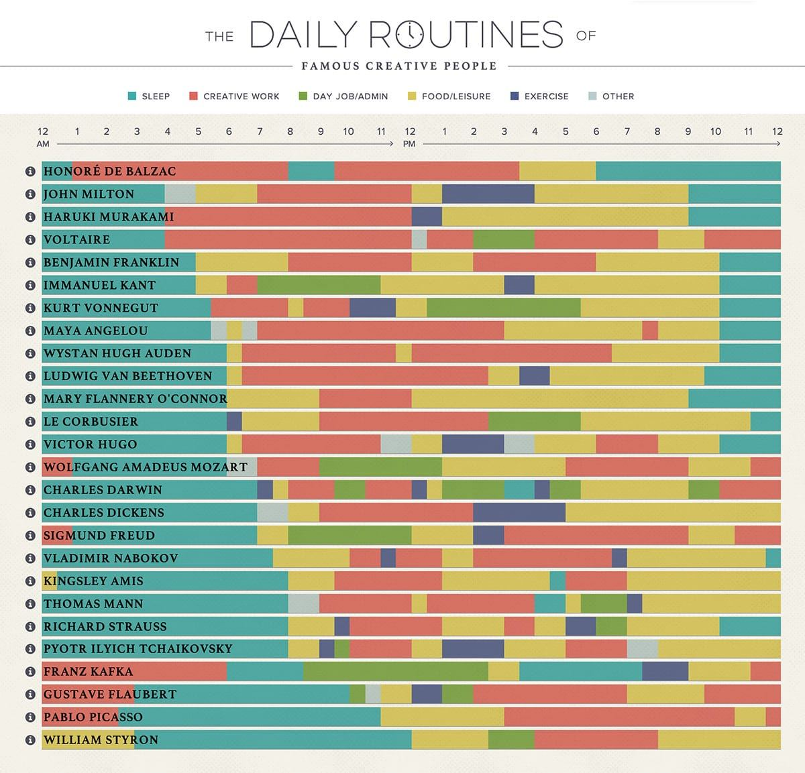

原题：We are in the middle of the digital renaissance, please take advantage of it
作者：Dan Koe（@thedankoe） | 发布：2026-08-28（北京时间；原始时间戳为 2026-08-27 19:01 UTC） | 原文：https://x.com/thedankoe/status/2093051293078261973
译注：开头说"未来会有 3 种人"，但只列出两类（纯粹派、自动机），第三类在后文以"第三个选项"（多维的人）出现，原文如此。"Digital Renaissance Man"与"New Renaissance Man"在原文中混用，分别译为"数字文艺复兴人"和"新文艺复兴人"。
未来会有 3 种人。
There will be 3 types of people in the future.
他们之间的鸿沟，每天都在拉大。
And the divide between them is growing larger every day.
如果你想在接下来 5–10 年里赢，关键是别变成第 1 种或第 2 种。
If you want to win in the next 5-10 years, it is critical that you avoid becoming number 1 or 2.
1）纯粹派（The Purists）
1) The Purists
“我们才是保持干净的那批人。”
“We’re the ones who stayed clean.”
就是那些拒绝 AI、退回到自然、简朴、无屏幕生活里的人。
The ones who rejected AI and retreated into nature, simplicity, and screen-free living.
It’s a peaceful existence, until they come across someone who uses any form of technology, then they have an uncontrollable violent reaction because it threatens their identification with this new religion.
你看着一个纯粹派，根本分不清他们是认真的，还是只是觉得这么干叛逆又酷。
When you look at a purist, you can’t tell if they’re being serious or if they’re just doing it because it’s the rebellious and cool thing to do.
They’re allergic to friction and addicted to optimization. If their eyes aren’t glued to a screen, they feel as if they are losing an imaginary race. Every thought they have runs through Claude.
他们已经分不清 AI 在哪结束、生活从哪开始。
They don’t know where AI ends and where life begins.
But I like to be different from most people. Maybe it’s a character flaw. Maybe it sounds cringe. But I find joy in it. It’s a creative challenge to live a life that very few people live, but I’ve found that growth (and therefore meaning/fulfillment) does not come from following the herd.
The Purists reject an entire portion of reality (external progress), demonize it, and assume that it can’t be healthily integrated with prioritization and effort.
You put points in each as you gain experience and increase your level. They interconnect. You can try to max out your money, but if you haven’t improved your mind, body, or spirit at all... money can only go so far. The greatest fruits of life await those who accept the challenge of continuous development in all domains of life.
纯粹派把内在世界（心智和精神）当成最高真理，拒绝外在世界。
The Purists treat their internal world (mind and spirit) as the highest truth and reject the external world.
It does not matter how enlightened you are. If your body is frail, health is at stake, and you don’t have any money to your name - you will suffer unnecessarily, and the solution to your problems is something you consider evil, so you have no choice but to play victim.
另一方面，自动机做的正好相反。他们痴迷金钱和进步，直到身上的人性无处可寻。
The Automatons, on the other hand, do the complete opposite. They obsess over money and progress until their humanity is nowhere to be found.
然而，还有第三个选项。
There is a 3rd option, however.
在那些没法独立思考的人听来，它疯狂又不可能，但未来属于那些变得多维的人。
It sounds crazy and impossible to those who can’t think for themselves, but the future belongs to those who become multi-dimensional.
下面就是你在接下来 10 年里获胜的方式：
Here is how you win in the next 10 years:
数字文艺复兴人：为什么博学者会在 AI 时代获胜
The Digital Renaissance Man: Why Polymaths Win In The AI Age
We’re in the middle of the second renaissance where proof of work replaces the resume, an audience replaces the employer, and taste replaces credentials.
Become a designer. Become a writer. Become an engineer, a marketer, a salesman, or just get whatever high-paying job you can because that’s how you become respected and live a good life.
那听着挺合理，可现在你觉得自己随时可以被替代。
And that seemed reasonable, but now you feel replaceable.
因为人本来就不该那样活着。
Because that was never how humans were meant to live.
现代意义上的“工作”，也就大约 250 年的历史。
The modern version of a “job” is only about 250 years old.
Before it, the ideal was a free person who did many things throughout their life (compared to a slave who did one specialized task... sounds familiar). The artisan, farmer, and pirate are all examples of those who knew how to run an entire operation, not just one piece of it. They were both the thinker and the maker, the artist and the scientist, they understood that in order to live a good life, they could not be limited to one area of study.
Leonardo Da Vinci walked into Verrocchio’s workshop to learn painting and left knowing anatomy, engineering, optics, and bronze casting. Nobody told him these were separate things that were supposed to be learned as their own credential or degree.
在文艺复兴时期，没人在乎你的细分领域，他们在乎的是你能做到什么。
In The Renaissance, nobody gave a shit about your niche. They gave a shit about what you were capable of.
During Industrialization, the factory model wasn’t meant to destroy education, critical thinking, individual agency, and taste, but that’s exactly what it did. It steered us away from the Renaissance ideal. Education became training instead of discovery. Employment and repetitive tasks kept us dumb to the entire entrepreneurial process, so we didn’t develop the experience or agency to do our own thing.
不幸的现实是，这对我们来说再正常不过。
The unfortunate reality is that this is normal to us.
线性的职业生涯，而不是指数级的。
The linear career instead of the exponential.
大众不会去质疑它。
The masses don’t question it.
而现在 AI 已经到了家门口，只有那些心态开放的人（那些不认同“彻底拒绝”或“彻底拥抱”下一阶段演化这队伍的人），才能用好这次转变。
And now that AI is on our doorstep, only those with an open mind (who do not identify with the “team” that fully rejects or embraces the next phase of evolution) will take advantage of this shift.
One person can now do what a 10-50 person team used to do, depending on the task. One person now has any and all known information at their fingertips. One person has access to social media (free distribution of their work).
如果你是一个真正的新文艺复兴人，这是活着的最好时代——而很多人会拼命说服你，说世界要完蛋了。
If you are a true New Renaissance Man, this is the greatest time to be alive - and many people will try to convince you that the world is doomed.
AI 现在能接手那些机器般重复的任务，而在过去两个世纪里，那些任务曾是我们全部的生活方式。人们特别担心 AI 会毁掉我们的思考、让我们更像机器，可他们这辈子本来就一直活得像机器。
AI can now handle the machine-like repetitive tasks that, for the past two centuries, used to be our entire way of life. People are so worried that AI will ruin our thinking and make us more like machines, when they’ve already been living like machines for the whole of their lives.
对那些加入这场第二次文艺复兴的人来说，你的任务是选好自己的手艺，借 AI 让你能经营整盘生意，并把精力放在品味、方向和判断上——因为 AI 的输出没有视角。AI 就只是那样，人工智能，像一袋你得亲手去塑形的水。
To those who join this Second Renaissance, your job is to choose your craft, leverage AI so that you can manage the entire operation, and focus on taste, direction, and judgment - because the output of AI does not have perspective. AI is simply that, artificial intelligence. Like a bag of water that you must mold.
成为一个多维的、不可替代的、行走的矛盾体
Become a multi-dimensional, irreplaceable, walking contradiction
最有趣的人，都是行走的矛盾体。
The most interesting people are walking contradictions.
Life is better when you can’t be shoved into a box that others can easily make sense of.
在未来，最有趣的人会是那个活在两个极端之间的人：纯粹的创造力，和纯粹的生产力。他们把模拟生活（无屏幕、无紧迫感、纯粹享受日子）和 AI 原生生活（借技术做成以前不可能的事）无缝地平衡起来。
In the future, the most interesting person will be the one who lives between two extremes. Pure creativity and pure productivity. They seamlessly balance the analog lifestyle (no screens, no urgency, pure life enjoyment) and the AI-native lifestyle (leveraging technology to do what used to be impossible).
Meaning and fulfillment are not found in a flat “balanced” lifestyle. They are found in contrast. If you were happy all the time, you wouldn’t consider it happiness. You would consider it normal. Honestly, a bit boring. You would need greater euphoria to feel what you think happiness is (hence why people can’t get off their phones today. A normal happy life is too boring for them). But when you fail, struggle, and suffer for something you care about, you learn what true happiness is on the other side.
Those who win will lean into that contrast. They work and rest deeply. Intense bursts of focus on their craft and life’s work followed by periods of complete rest - just like the world’s most successful creatives.

查尔斯·达尔文一生写了 19 本书。
Charles Darwin wrote 19 books in his lifetime.
以那样的产出，他的晨间日常会让人吃惊：
His morning routine would surprise people for that level of output:
早上 7:00——短途散步，然后吃早餐。
7:00 AM - Short walk, then breakfast.
早上 8:00–9:30——在书房进行第一段工作，这是他效率最高的时段。
8:00 - 9:30 AM - First work session in his study. This was his most productive block.
早上 9:30–10:30——休息，读信，陪家人。
9:30 - 10:30 AM - Break to read letters and spend time with family.
上午 10:30–中午——第二段工作。到这儿，达尔文就认为自己“干完了一天的好活”。
10:30 AM - Noon - Second work session. By this point, Darwin considered himself to have “done a good day’s work.”
I believe those who will thrive in the future will have a similar routine, but with the output of 10-20 people, and be able to single-handedly build their life’s work.
他们会拥有一家“一人企业”（One-Human Business，我会在另一封信里拆解）。
They will have a One-Human Business (will break down in another letter).
这个星球上有将近 70 亿人。我希望有一天，会有将近 70 亿家公司。——纳瓦尔·拉维坎特
There are almost 7B people on this planet. Someday, I hope, there will be almost 7B companies. – Naval Ravikant
Before factories and industrialization, you worked until the task was done, not until your 8 hour shift was over. You worked according to the rhythm of seasons, sunlight, and energy.
更重要的是，你不是靠标准化课程和毫无意义的记忆测试，学会如何变得有价值的。
More importantly, you didn’t learn how to become valuable through a standardized curriculum and meaningless memorization tests.
你在做中学。
You learned by doing.
你在作坊里学，从学徒到熟练工再到大师，模仿一个懂行的人，直到你自己的品味和判断长出来。
You learned in the workshop from apprentice to journeyman to master, imitating someone who knew what they were doing until your own taste and judgment were formed.
现在的问题恰恰就是这个。
The question now is just that.
怎么才能成为一个新文艺复兴人？
How do you become a New Renaissance Man?
如何成为一个数字文艺复兴人
How to Become a Digital Renaissance Man
全都做。
Do it all.
去当作家、设计师、营销人、电影人、健美运动员、跑者，或者你好奇心想要的任何东西。
Become a writer, designer, marketer, filmmaker, bodybuilder, runner, or whatever your curiosity desires.
但把你的专注和注意力，引到一个载体里。
But channel your focus and attention into one vessel.
一门手艺，一件你选择以之闻名的事；而你多方面的成长，只会增强你超越其他所有人的能力。
One craft. One thing that you choose to become known for, and your multi-faceted development will only contribute to your ability to get ahead of everyone else.
I don’t care about the argument of whether or not AI art is real art or AI writing is real writing because that seems like a great distraction that prevents you from doing anything with your life (outside of complaining for views and likes, reinforcing the identity that isn’t going to serve you well in the coming years).
你需要一门手艺，但得明智地挑。
You need a craft, but you need to choose your craft wisely.
你的手艺，落在三者的交汇处：你在乎什么、你能做得独特的是什么、别人愿意为什么付你钱。
Your craft lives at the intersection of what you care about, what you can uniquely do, and what others are willing to pay you for.
搭一套不可替代的技能栈，有 3 层。
There are 3 layers to building an irreplaceable skill stack.
Marketing, sales, writing, speaking, psychology, etc. It’s understanding the mechanics of human attention and how what people perceive as valuable is highly subjective and changes as the world does.
任何想以任何形式靠自己出头的人，都必须精通这个领域。
Every single person who wants to succeed on their own, in any form, must master this domain.
这就是“别人愿意为什么付你钱”的那一部分。
This is the “what others are willing to pay you for” part.
第 2 层，是你对某个领域的痴迷和独特兴趣。
Layer 2 is your domain obsession and unique interests.
哲学、健身、设计、编程、营养，或者别的任何东西。这些都不会消失，它们只是在演化。
Philosophy, fitness, design, coding, nutrition, or anything else. None of these are going away, they are simply evolving.
The combination of these interests is where your uniqueness lies. The jacked philosopher is far more valuable than the armchair philosopher who only grows their mind without direct experience to test their theories, and it is far more interesting. People will come to you over the next guy.
This is the “what you care about” and “what you can uniquely do” part, and it is the thing that other people come to you for. The human nature foundation is what helps you make it appealing to those people.
第 3 层，是技术技能。
Layer 3 is technical skill.
邮件营销软件、Photoshop、无代码建站、社交媒体管理、在屏幕上一行行敲代码。
Email marketing software. Photoshop. No-code website design. Social media management. Typing the physical code on a screen.
这曾经是最要紧的，因为学会这些工具要花时间和精力，但现在 AI 轻轻松松全做了。你不该把自己的未来押在对某一款工具的精通上。
This used to be the most important, because it took time and effort to learn these tools, but now AI does it all with ease. You should not bank your future on mastery of a tool.
The pattern of every technological shift is the same. The mechanical part of the skill gets automated, and the human role moves up a layer. The scribe became the editor, and the hand-weaver became the machine operator.
这一点我们待会儿再细说。
We’ll discuss this more in a second.
如何成为一个危险地自学成才的人
How to become dangerously self-educated
学校教你如何在社会里运作。
Schools teach you how to operate within society.
这在某种程度上没问题，也必要，但它不教你如何走自己的路。公立学校说到底是一套筛选和条件化的机制。
Which is fine and necessary to some extent, but they do not teach you how to navigate your own path. Public schools are filtering and conditioning mechanisms more than anything.
It is the process of learning what’s necessary to achieve self-generated vision and goals, not the process of hoarding knowledge or memorizing facts to do well on a test that does not map to reality.
更糟的是，大多数人一毕业就不再学习了。
Even worse, most people stop learning after graduation.
他们到了 20–25 岁，就把同一天重复一辈子。他们不会去追一个需要独特知识的创造性挑战。
They turn 20-25 and repeat the same day for the rest of their life. They do not pursue a creative challenge that demands unique knowledge.
那你到底该怎么学？
So how do you actually learn?
走学徒模式。
You follow the apprenticeship model.
今天美妙的地方在于，你只要拿起一本书、在手机上打开 YouTube，就能找到导师和大牛。
The beautiful thing about today is that you can find mentors and masters by simply picking up a book or opening YouTube on your phone.
我不在乎你是不是用 AI 拿信息。
I don’t care if you use AI to get information.
我也不在乎你是不是从某一个 YouTube 大牛那儿拿到全部建议。
I don’t care if you get all your advice from one YouTube guru.
What I do care about is if you have a vision, have a goal, work toward that goal, and apply what you learn to problems that come up along the way. That is how you test what you learn to verify its validity for your specific situation.
不管 AI 会不会幻觉，世上仍有一大堆蠢得出奇的人，你大概不该听他们的。无论如何，你都得质疑、检验、实验。
Whether AI hallucinates or not, there are still plenty of profoundly stupid humans that you probably shouldn’t listen to. You need to question and test and experiment either way.
别先学再做——那是你陷进教程地狱的路。
Don’t learn and then do, that’s how you get stuck in tutorial hell.
你先去做那件事，或者先试着去做，只有到那时，你的心智才准备好接住那个能让你往前走的教训。
You do the thing first, or attempt to do the thing, and only then is your mind primed to receive the lesson that allows you to make forward progress.
一人企业（以及如何加入新经济）
The one-human business (and how to join the new economy)
创作者正在取代机构。
Creators are replacing institutions.
我知道这话听着傻，可你真看不出来吗？
I know that sounds silly, but can you not see it?
创作者是新的教育系统——你生活里真正有用的那些东西，难道不大多是在 Substack、YouTube、播客或者 X 上的垂直账号那儿学来的吗？
Creators are the new education system - do you not learn most of the things that are actually useful in your life on Substack, YouTube, podcasts, or niche accounts on X?
Creators shape culture, culture shapes behavior - do you not trust a creator whose thoughts you’ve spent time with over politicians who obviously have their own self-interest in mind?
互联网是无需许可的杠杆——你建受众、开生意、卖产品，都不需要谁批准。这就是高能动性的路。
The internet is permissionless leverage - you don’t need approval to build an audience, start a business, or sell a product. It is the high-agency path.
AI 给通才和博学者踩了油门——你可以成为一家一人企业。用社交媒体上的内容，围绕你的毕生事业聚起受众；用代码搭出产品、漏斗和数字地产；再加上让你所做的事比旁人更值钱的领域专属知识。
AI accelerates the generalist and polymath - you can become a one-human business. Content on social media to attract an audience around your life’s work, code to build the product, funnel, and digital real estate, and domain specific knowledge that makes what you do valuable over the next person.
现在我说“创作者”，你大概想到的是网红或“个人品牌”。
Now when I say creator, you probably think of an influencer or “personal brand.”
I mean someone who creates value. They solve problems, create solutions, and help others do the same. And since value exchange is the crux of human relationships, they return the favor, often in the form of money.
James Clear has a personal brand, yes, but he is really just using newsletters, books, content, and other media to get eyes on his life’s work and earn an independent income.
I believe most ambitious individuals will take this route in the future, even if what we know as social media today isn’t where you put your work in front of other people. In the past it was newspaper and radio, now it’s social media, who knows what it will be in the future, but starting on social media puts you ahead of everyone else. That’s where the attention is.
A personal brand is just the highest leverage vessel to be a creator right now. It’s unfortunate it’s turned into a marketable “content creator” identity, but that’s the world we live in. That doesn’t mean you have to conform to what you think a content creator should be.
We will break down the one-human business in a future letter, but the next Creator Bootcamp starts September 9th. If you want to learn irreplaceable branding, unique content, and non-gimmicky social growth strategies, consider joining here.
如何用 AI 实现不可能
How to achieve the impossible with AI
大多数人没意识到，AI 不只是一台垃圾内容生成器、一个新时代的搜索引擎。
Most people do not realize that AI is more than a slop generator and a new-age search engine.
They do not realize that they can quite literally ask it to build a software, landing page, funnel, app, tool, or whatever else they need to do anything on the internet.
“可是 Dan，那样只会造出 AI 垃圾！”
“But Dan, that just leads to AI slop!”
没错。而大多数人就停在这儿了。
Correct. And that’s where most people stop.
他们没想到还有迭代这回事，也没想到不管有没有 AI，你的第一次迭代都会很烂。
They don’t realize iteration exists. And that your first iteration would suck with or without AI.
落地页从一份粗糙草稿开始，然后靠你去做微调，直到它真能起作用。
The landing page starts as a rough draft, then it’s up to you to make micro adjustments until it’s actually effective.
软件一开始 bug 一堆、看着也糟，直到你一遍遍修，修到它比市面上 99% 的应用都好。
The software is extremely buggy and looks horrible until you fix the bugs over and over again until it’s better than 99% of apps on the market.
简而言之，人们不明白，他们可以直接问“我怎么才能做到这个？”，一路追问下去直到形成一份清晰的计划，再让 AI 去执行那个由你选择、由你掌控的愿景，而不是一个随机的瞎猜，然后继续迭代，直到它有价值。
In short, people don’t understand that they can just ask “How can I do this?” And continue asking questions until a clear plan is formed, then have the AI execute on your vision that you choose and control, not a random guess, and proceed to iterate until it is valuable.
这仍然要花不少时间，那些只冲着一口快餐式多巴胺来的人，会半路熄火。
It still takes quite a bit of time, and those who are only there for a quick dopamine hit will fizzle out.
下面是一份“如何用 AI 做任何事”的快速上手指南：
Here is a quick start guide on how to do anything with AI:
1）知道你想要什么，以及“好”长什么样
1) Know what you want and what good looks like
对你们大多数人来说，你会用 AI 去建一家一人企业。
For most of you, you are going to use AI to build a one-person business.
而如果你不知道怎么建一门生意，你就会指望 AI 在你根本说不清自己需要什么的情况下，替你把它完美做好。
And if you don’t know how to build a business, then you’re going to expect the AI to do it perfectly for you without knowing what you need.
要看到任何形式的成功，依然要靠多年迭代，在这一点上什么都没变。
It still takes years of iteration to see any form of success, nothing has changed in that regard.
But if you know what you want, what you need, and what good looks like, then you can simply ask the AI how it can help you accomplish those goals and go from there.
最好的起点，就是单纯把 AI 当学习工具用。
The best place to start is by simply using AI as a learning tool.
做报价方案、写文案、搞社交媒体——你连想都没想到要去问的事，当然没法让 AI 替你做。
Offer creation. Copywriting. Social media. You can’t have AI do something that you don’t even think to ask about.
2）把标准定得离谱地高
2) Have absurdly high standards
你从 AI 那儿得到的每个回答都像垃圾，原因就在于你把初稿当成了终稿。
The reason every response you get from AI is slop is that you treat the first draft as the final draft.
你没想明白：每一个小设计、小功能、词语、句子，或者你让 AI 做的别的什么，你仍然得逐个去调。
You don’t understand that you still have to tweak every little design, feature, word, sentence, or whatever else you are having AI do.
你用 AI 做出来的东西很烂，是因为你把 AI 看成一个理应绝对天才的东西，而不是一个与你自己的智力和抱负水平相匹配的工具。
What you create with AI sucks because you see AI as this thing that should just be an absolute genius rather than seeing it as a tool that meets your level of intelligence and ambition.
3）试着用 AI 取代你自己
3) Try to replace yourself with AI.
学 AI 最好的办法，是试着把你做的每一件事都自动化。
The best way to learn AI is to try to automate everything that you do.
你会很快摸清什么能自动化、什么不能。
You will quickly learn what can and can’t be automated.
到那时，你才能选择让 AI 碰你生意和手艺的哪些部分。
Only then can you choose what parts of your business and craft you want AI to touch.
作者产品推广（Eden）· 已折叠，点击展开
对我来说，AI 显然特别擅长扫描大片信息、找模式和趋势。只靠手动在社交媒体上翻头部 YouTube 视频、推文和文章，是犯傻，因为那现在会让你吃大亏。所以你现在就该用 AI 来做这件事。https://eden.so/
For me, AI is obviously great at scanning large swaths of information for patterns and trends. It would be silly to only manually research social media for top YouTube videos, tweets, and articles as that now puts you at a major disadvantage. That’s why you now use AI to do this.
But when it comes to writing the posts themselves... One, I like the creative process of writing, so I make it a part of my day. Two, the value of writing is in the eyes of the reader. With code, no end user cares about what the code looks like. They don’t see it. They care about if it’s beneficial to them. That’s why I write, for fine tuned control over the value provided.
如果你不知道从哪开始，就想一件你每天都会做的事。
If you don’t know where to start, just think of anything you do on a daily basis.
And of course, understand that the automation (the prompt/tool/skill) is also a first draft. It will suck at first. Just tell it how to improve.
以后的信里，我们会把这封信提到的每一样东西都往深里挖：数字文艺复兴、怎么高效学习、最值得学的技能、怎么用 AI 又不毁掉自己的思考、怎么清晰地思考，以及更多。
In future letters, we are going to dive deeper into everything mentioned in this letter. The Digital Renaissance. How to learn effectively. The best skills to learn. How to use AI without ruining your thinking. How to think with clarity. And more.
感谢阅读。
Thank you for reading.
——Dan
– Dan
English original (from the X article data)
There will be 3 types of people in the future.
And the divide between them is growing larger every day.
If you want to win in the next 5-10 years, it is critical that you avoid becoming number 1 or 2.
1) The Purists
“We’re the ones who stayed clean.”
The ones who rejected AI and retreated into nature, simplicity, and screen-free living.
It’s a peaceful existence, until they come across someone who uses any form of technology, then they have an uncontrollable violent reaction because it threatens their identification with this new religion.
When you look at a purist, you can’t tell if they’re being serious or if they’re just doing it because it’s the rebellious and cool thing to do.
2) The Automatons
The ones who outsource every decision.
They’re allergic to friction and addicted to optimization. If their eyes aren’t glued to a screen, they feel as if they are losing an imaginary race. Every thought they have runs through Claude.
They don’t know where AI ends and where life begins.
Most people think they have to pick a side.
But I like to be different from most people. Maybe it’s a character flaw. Maybe it sounds cringe. But I find joy in it. It’s a creative challenge to live a life that very few people live, but I’ve found that growth (and therefore meaning/fulfillment) does not come from following the herd.
I’m convinced both sides are wrong.
The Purists reject an entire portion of reality (external progress), demonize it, and assume that it can’t be healthily integrated with prioritization and effort.
There are 4 quadrants of reality.
Like a skill tree in a video game.
You put points in each as you gain experience and increase your level. They interconnect. You can try to max out your money, but if you haven’t improved your mind, body, or spirit at all... money can only go so far. The greatest fruits of life await those who accept the challenge of continuous development in all domains of life.
The Purists treat their internal world (mind and spirit) as the highest truth and reject the external world.
This is a recipe for disaster.
It does not matter how enlightened you are. If your body is frail, health is at stake, and you don’t have any money to your name - you will suffer unnecessarily, and the solution to your problems is something you consider evil, so you have no choice but to play victim.
The Automatons, on the other hand, do the complete opposite. They obsess over money and progress until their humanity is nowhere to be found.
There is a 3rd option, however.
It sounds crazy and impossible to those who can’t think for themselves, but the future belongs to those who become multi-dimensional.
Here is how you win in the next 10 years:
The Digital Renaissance Man: Why Polymaths Win In The AI Age
We’re in the middle of the second renaissance where proof of work replaces the resume, an audience replaces the employer, and taste replaces credentials.
The greatest tragedy of our times is that we were fooled into believing that the Mechanical Life is the only path to success.
You were told to pick a lane.
You were convinced that having multiple interests was a character flaw.
Become a designer. Become a writer. Become an engineer, a marketer, a salesman, or just get whatever high-paying job you can because that’s how you become respected and live a good life.
And that seemed reasonable, but now you feel replaceable.
Because that was never how humans were meant to live.
The modern version of a “job” is only about 250 years old.
Before it, the ideal was a free person who did many things throughout their life (compared to a slave who did one specialized task... sounds familiar). The artisan, farmer, and pirate are all examples of those who knew how to run an entire operation, not just one piece of it. They were both the thinker and the maker, the artist and the scientist, they understood that in order to live a good life, they could not be limited to one area of study.
Leonardo Da Vinci walked into Verrocchio’s workshop to learn painting and left knowing anatomy, engineering, optics, and bronze casting. Nobody told him these were separate things that were supposed to be learned as their own credential or degree.
In The Renaissance, nobody gave a shit about your niche. They gave a shit about what you were capable of.
During Industrialization, the factory model wasn’t meant to destroy education, critical thinking, individual agency, and taste, but that’s exactly what it did. It steered us away from the Renaissance ideal. Education became training instead of discovery. Employment and repetitive tasks kept us dumb to the entire entrepreneurial process, so we didn’t develop the experience or agency to do our own thing.
The unfortunate reality is that this is normal to us.
The linear career instead of the exponential.
The masses don’t question it.
And now that AI is on our doorstep, only those with an open mind (who do not identify with the “team” that fully rejects or embraces the next phase of evolution) will take advantage of this shift.
One person can now do what a 10-50 person team used to do, depending on the task. One person now has any and all known information at their fingertips. One person has access to social media (free distribution of their work).
If you are a true New Renaissance Man, this is the greatest time to be alive - and many people will try to convince you that the world is doomed.
AI can now handle the machine-like repetitive tasks that, for the past two centuries, used to be our entire way of life. People are so worried that AI will ruin our thinking and make us more like machines, when they’ve already been living like machines for the whole of their lives.
To those who join this Second Renaissance, your job is to choose your craft, leverage AI so that you can manage the entire operation, and focus on taste, direction, and judgment - because the output of AI does not have perspective. AI is simply that, artificial intelligence. Like a bag of water that you must mold.
Become a multi-dimensional, irreplaceable, walking contradiction
The most interesting people are walking contradictions.
Life is better when you can’t be shoved into a box that others can easily make sense of.
In the future, the most interesting person will be the one who lives between two extremes. Pure creativity and pure productivity. They seamlessly balance the analog lifestyle (no screens, no urgency, pure life enjoyment) and the AI-native lifestyle (leveraging technology to do what used to be impossible).
Meaning and fulfillment are not found in a flat “balanced” lifestyle. They are found in contrast. If you were happy all the time, you wouldn’t consider it happiness. You would consider it normal. Honestly, a bit boring. You would need greater euphoria to feel what you think happiness is (hence why people can’t get off their phones today. A normal happy life is too boring for them). But when you fail, struggle, and suffer for something you care about, you learn what true happiness is on the other side.
Those who win will lean into that contrast. They work and rest deeply. Intense bursts of focus on their craft and life’s work followed by periods of complete rest - just like the world’s most successful creatives.
Charles Darwin wrote 19 books in his lifetime.
His morning routine would surprise people for that level of output:
7:00 AM - Short walk, then breakfast.
8:00 - 9:30 AM - First work session in his study. This was his most productive block.
9:30 - 10:30 AM - Break to read letters and spend time with family.
10:30 AM - Noon - Second work session. By this point, Darwin considered himself to have “done a good day’s work.”
After noon - Second walk of the day around the Sandwalk, a famous quarter-mile gravel path he built specifically for thinking and reflection.
After lunch - Read the newspaper, then rest while his wife read aloud to him.
4:00 PM - Third walk of the day, usually around the Sandwalk again, sometimes with company.
Darwin worked roughly 3 hours of focused, creative work per day across two sessions.
I believe those who will thrive in the future will have a similar routine, but with the output of 10-20 people, and be able to single-handedly build their life’s work.
They will have a One-Human Business (will break down in another letter).
There are almost 7B people on this planet. Someday, I hope, there will be almost 7B companies. – Naval Ravikant
Before factories and industrialization, you worked until the task was done, not until your 8 hour shift was over. You worked according to the rhythm of seasons, sunlight, and energy.
More importantly, you didn’t learn how to become valuable through a standardized curriculum and meaningless memorization tests.
You learned by doing.
You learned in the workshop from apprentice to journeyman to master, imitating someone who knew what they were doing until your own taste and judgment were formed.
The question now is just that.
How do you become a New Renaissance Man?
How to Become a Digital Renaissance Man
Do it all.
Become a writer, designer, marketer, filmmaker, bodybuilder, runner, or whatever your curiosity desires.
But channel your focus and attention into one vessel.
One craft. One thing that you choose to become known for, and your multi-faceted development will only contribute to your ability to get ahead of everyone else.
Here’s what you do.
Choose your craft, become irreplaceable
Most artists, writers, and creatives are revolting against AI right now because they identify with their skill, tool, or specific way of working.
I don’t care about the argument of whether or not AI art is real art or AI writing is real writing because that seems like a great distraction that prevents you from doing anything with your life (outside of complaining for views and likes, reinforcing the identity that isn’t going to serve you well in the coming years).
You need a craft, but you need to choose your craft wisely.
Your craft lives at the intersection of what you care about, what you can uniquely do, and what others are willing to pay you for.
There are 3 layers to building an irreplaceable skill stack.
Layer 1 is a foundation of human nature.
Marketing, sales, writing, speaking, psychology, etc. It’s understanding the mechanics of human attention and how what people perceive as valuable is highly subjective and changes as the world does.
Every single person who wants to succeed on their own, in any form, must master this domain.
This is the “what others are willing to pay you for” part.
Layer 2 is your domain obsession and unique interests.
Philosophy, fitness, design, coding, nutrition, or anything else. None of these are going away, they are simply evolving.
The combination of these interests is where your uniqueness lies. The jacked philosopher is far more valuable than the armchair philosopher who only grows their mind without direct experience to test their theories, and it is far more interesting. People will come to you over the next guy.
This is the “what you care about” and “what you can uniquely do” part, and it is the thing that other people come to you for. The human nature foundation is what helps you make it appealing to those people.
Layer 3 is technical skill.
Email marketing software. Photoshop. No-code website design. Social media management. Typing the physical code on a screen.
This used to be the most important, because it took time and effort to learn these tools, but now AI does it all with ease. You should not bank your future on mastery of a tool.
The pattern of every technological shift is the same. The mechanical part of the skill gets automated, and the human role moves up a layer. The scribe became the editor, and the hand-weaver became the machine operator.
We’ll discuss this more in a second.
How to become dangerously self-educated
Schools teach you how to operate within society.
Which is fine and necessary to some extent, but they do not teach you how to navigate your own path. Public schools are filtering and conditioning mechanisms more than anything.
True education is discovery.
It is the process of learning what’s necessary to achieve self-generated vision and goals, not the process of hoarding knowledge or memorizing facts to do well on a test that does not map to reality.
Even worse, most people stop learning after graduation.
They turn 20-25 and repeat the same day for the rest of their life. They do not pursue a creative challenge that demands unique knowledge.
So how do you actually learn?
You follow the apprenticeship model.
The beautiful thing about today is that you can find mentors and masters by simply picking up a book or opening YouTube on your phone.
I don’t care if you use AI to get information.
I don’t care if you get all your advice from one YouTube guru.
What I do care about is if you have a vision, have a goal, work toward that goal, and apply what you learn to problems that come up along the way. That is how you test what you learn to verify its validity for your specific situation.
Whether AI hallucinates or not, there are still plenty of profoundly stupid humans that you probably shouldn’t listen to. You need to question and test and experiment either way.
Don’t learn and then do, that’s how you get stuck in tutorial hell.
You do the thing first, or attempt to do the thing, and only then is your mind primed to receive the lesson that allows you to make forward progress.
The one-human business (and how to join the new economy)
Creators are replacing institutions.
I know that sounds silly, but can you not see it?
Creators are the new education system - do you not learn most of the things that are actually useful in your life on Substack, YouTube, podcasts, or niche accounts on X?
Creators shape culture, culture shapes behavior - do you not trust a creator whose thoughts you’ve spent time with over politicians who obviously have their own self-interest in mind?
The internet is permissionless leverage - you don’t need approval to build an audience, start a business, or sell a product. It is the high-agency path.
AI accelerates the generalist and polymath - you can become a one-human business. Content on social media to attract an audience around your life’s work, code to build the product, funnel, and digital real estate, and domain specific knowledge that makes what you do valuable over the next person.
Now when I say creator, you probably think of an influencer or “personal brand.”
That’s not exactly what I mean.
I mean someone who creates value. They solve problems, create solutions, and help others do the same. And since value exchange is the crux of human relationships, they return the favor, often in the form of money.
James Clear has a personal brand, yes, but he is really just using newsletters, books, content, and other media to get eyes on his life’s work and earn an independent income.
I believe most ambitious individuals will take this route in the future, even if what we know as social media today isn’t where you put your work in front of other people. In the past it was newspaper and radio, now it’s social media, who knows what it will be in the future, but starting on social media puts you ahead of everyone else. That’s where the attention is.
A personal brand is just the highest leverage vessel to be a creator right now. It’s unfortunate it’s turned into a marketable “content creator” identity, but that’s the world we live in. That doesn’t mean you have to conform to what you think a content creator should be.
We will break down the one-human business in a future letter, but the next Creator Bootcamp starts September 9th. If you want to learn irreplaceable branding, unique content, and non-gimmicky social growth strategies, consider joining here.
How to achieve the impossible with AI
Most people do not realize that AI is more than a slop generator and a new-age search engine.
They do not realize that they can quite literally ask it to build a software, landing page, funnel, app, tool, or whatever else they need to do anything on the internet.
“But Dan, that just leads to AI slop!”
Correct. And that’s where most people stop.
They don’t realize iteration exists. And that your first iteration would suck with or without AI.
The landing page starts as a rough draft, then it’s up to you to make micro adjustments until it’s actually effective.
The software is extremely buggy and looks horrible until you fix the bugs over and over again until it’s better than 99% of apps on the market.
In short, people don’t understand that they can just ask “How can I do this?” And continue asking questions until a clear plan is formed, then have the AI execute on your vision that you choose and control, not a random guess, and proceed to iterate until it is valuable.
It still takes quite a bit of time, and those who are only there for a quick dopamine hit will fizzle out.
Here is a quick start guide on how to do anything with AI:
1) Know what you want and what good looks like
For most of you, you are going to use AI to build a one-person business.
And if you don’t know how to build a business, then you’re going to expect the AI to do it perfectly for you without knowing what you need.
It still takes years of iteration to see any form of success, nothing has changed in that regard.
But if you know what you want, what you need, and what good looks like, then you can simply ask the AI how it can help you accomplish those goals and go from there.
The best place to start is by simply using AI as a learning tool.
Offer creation. Copywriting. Social media. You can’t have AI do something that you don’t even think to ask about.
2) Have absurdly high standards
The reason every response you get from AI is slop is that you treat the first draft as the final draft.
You don’t understand that you still have to tweak every little design, feature, word, sentence, or whatever else you are having AI do.
What you create with AI sucks because you see AI as this thing that should just be an absolute genius rather than seeing it as a tool that meets your level of intelligence and ambition.
3) Try to replace yourself with AI.
The best way to learn AI is to try to automate everything that you do.
You will quickly learn what can and can’t be automated.
Only then can you choose what parts of your business and craft you want AI to touch.
For me, AI is obviously great at scanning large swaths of information for patterns and trends. It would be silly to only manually research social media for top YouTube videos, tweets, and articles as that now puts you at a major disadvantage. That’s why you now use AI to do this.
But when it comes to writing the posts themselves... One, I like the creative process of writing, so I make it a part of my day. Two, the value of writing is in the eyes of the reader. With code, no end user cares about what the code looks like. They don’t see it. They care about if it’s beneficial to them. That’s why I write, for fine tuned control over the value provided.
If you don’t know where to start, just think of anything you do on a daily basis.
Then, ask AI how it could be turned into a repeatable process with a prompt, skill, tool, software, or skill.
And of course, understand that the automation (the prompt/tool/skill) is also a first draft. It will suck at first. Just tell it how to improve.
In future letters, we are going to dive deeper into everything mentioned in this letter. The Digital Renaissance. How to learn effectively. The best skills to learn. How to use AI without ruining your thinking. How to think with clarity. And more.